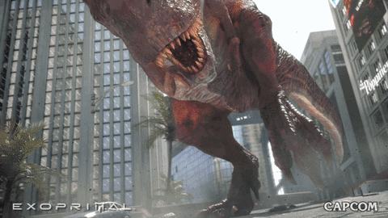
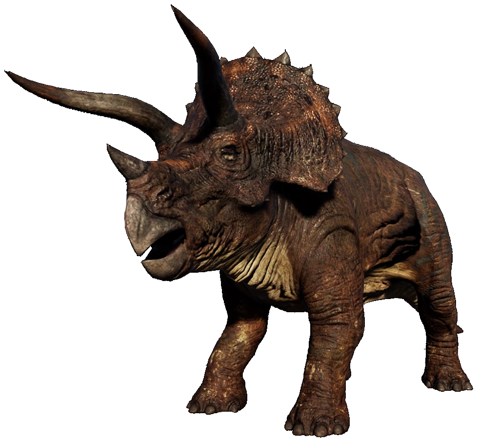
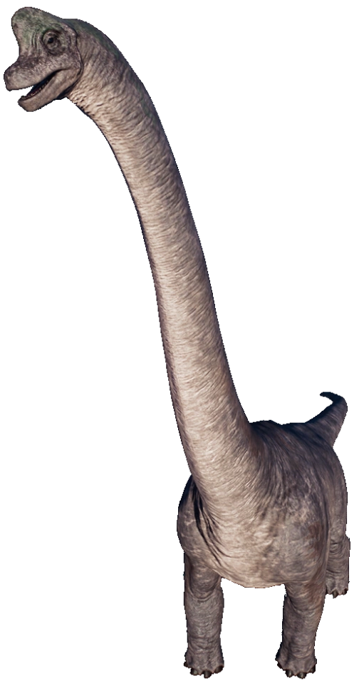
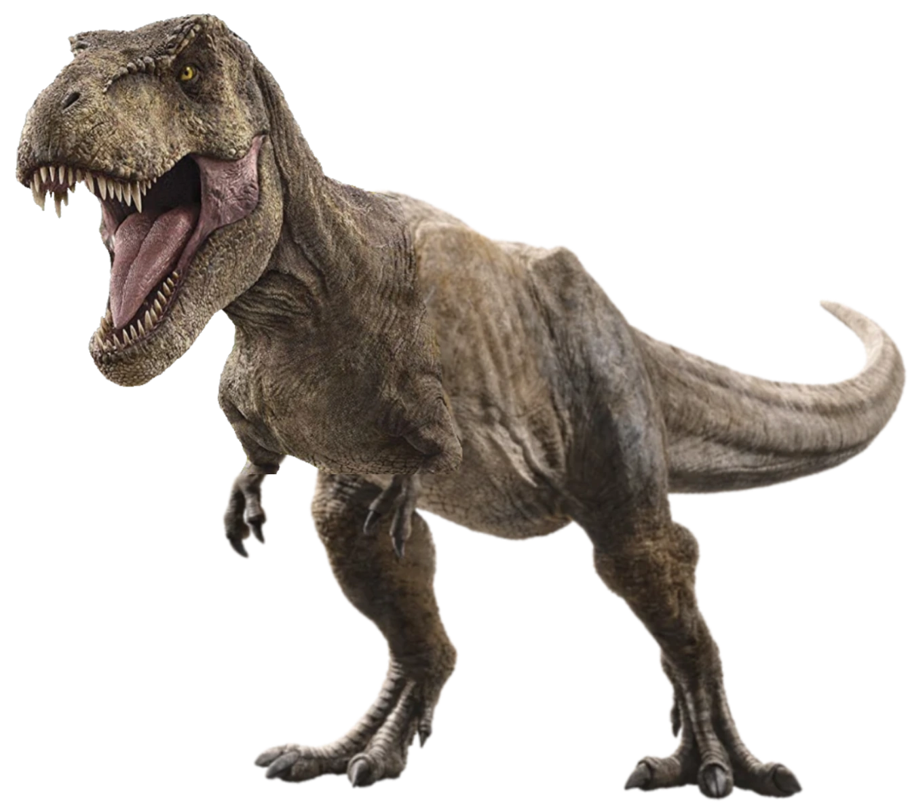
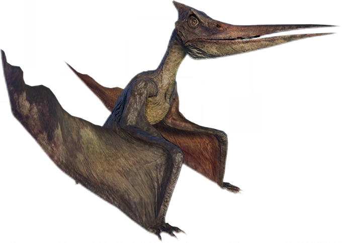

Cretaceous Period
Tyrannosaurus Rex
Tyrannosaurus rex, commonly abbreviated as T. rex, is one of the most well-known and popular dinosaurs of all time. It was a large bipedal carnivorous dinosaur that lived during the Late Cretaceous period, approximately 68 to 66 million years ago, in what is now North America.
- Size: T. rex was one of the largest meat-eating dinosaurs that ever lived, with adults measuring up to 40 feet (12.3 meters) long and weighing as much as 7 tons (6,350 kg).
- Skull: The skull of T. rex was one of the largest of any land animal, measuring up to 5 feet (1.5 meters) long. It was heavily built, with powerful jaws and teeth that could bite through bone.
- Arms: Despite its massive size, T. rex had relatively small arms that were only about 3 feet (1 meter) long. The purpose of these arms is still a matter of debate among scientists.
- Legs: T. rex had long, powerful legs that were adapted for running and could propel the dinosaur at speeds of up to 20-25 miles per hour (32-40 km/h).
- Diet: T. rex was a carnivore that preyed on other dinosaurs, such as hadrosaurs and ceratopsians, as well as smaller carnivorous dinosaurs.
- Habitat: T. rex lived in a variety of environments, including forests, swamps, and open plains.
- Extinction: T. rex went extinct at the end of the Cretaceous period, along with all other non-avian dinosaurs, in a mass extinction event caused by a combination of factors, including a large asteroid impact.
- Ornithischians
- ▸ These are herbivorous dinosaurs that walked on two legs or four legs, and had a bird-like hip structure.
- Sauropods
- ▸ These are large, long-necked herbivores that walked on four legs.
- Theropods
- ▸ These are bipedal carnivores that walked on two legs.
- Pterosaurs
- ▸ These are not actually dinosaurs, but they are flying reptiles that lived at the same time as dinosaurs. They have wings made of skin that stretched from their bodies to their elongated fingers.
Examples of dinosaurs during Cretaceous period.
| Ornithischians | Sauropods | Theropods | Pterosaurs |
|---|---|---|---|
| Triceratops  |
Brachiosaurus  |
Tyrannosaurus Rex  |
Pteranodon  |
| Ankylosaurus, Stegosaurus, Edmontonia, Pachycephalosaurus | Argentinosaurus, Apatosaurus, Diplodocus, Saltasaurus | Velociraptor, Spinosaurus, Allosaurus, Deinonychus | Quetzalcoatlus, Nyctosaurus, Tupuxuara, Pterodaustro |